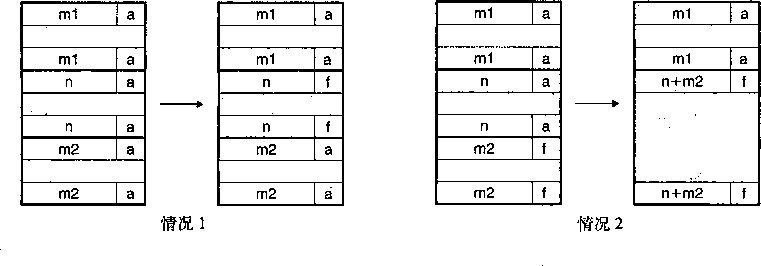
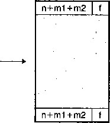

的一部分，并返回一个指向这个新块的指针。
I
m..:n IN ii i
a) pi = malloc(4*sizeof(int)) p1 P2
为什么要使用动态存储器分配
C)p3 : malloc(6*sizeof(int))
b) p2 = malloc(5*sizeof(int))
I
rr
程序使用动态存储器分配的最重要的原因 是经常直到程序实际运行时，它们才知道某 些数据结构的大小。例如，假设要求我们编 写一个C程序，它读一fwfASCII码整数 的链表，每行一个整数，从stdin到一个C 数组。输入是由整数《和接下来要读和存储 到数组中的《个整数组成的。最简单的方法 就是用某种硬编码的最大数组大小静态地定 义这个数组：
EE
I I
] #include "csapp.h"
#define MAXN 15213
d) free(p2)
3
\ 2 r
int array[MAXN];
int mainO
I
e)p4 = malloc(2*sizeof(int))
图9-34用malloc和free分配和释放块。每 个方框对应于一 个字。 每个粗线标出的
int i, n;
9
10 scanf ( M 7 0 d" , &n);
n if (n > MAXN)
app_error("Input file too big")； 矩形对应于一个块。阴影部分是已分配
U ' 03 ： scalf^d^ Lrl；W); 的块。已分配的块的填充区域是深阴影
exit(0); 的。无阴影部分是空闲块。堆地址是从
} ’ 左往右增加的
像这样用硬编码的大小来分配数组通常不是一种好想法。MAXN的值是任意的，与机器上 可用的虚拟存储器的实际数量没有关系。而且，如果这个程序的使用者想读取一个比MAXN大 的文件 ， 唯一的办法就是用一个更大的MAXN值来重新编 译这个 程序。虽然对于这个简单的示 例来说这不成问题，但是硬编码数组界限的出现对于拥有百万行代码和大量使用者的大型软件产 品而言，会变成一场维护的噩梦。
一种更好的方法是在运行时 ， 在已知了 《 的值之后，动态地分配这个数组。使用这种方法 ， 数组大小的最大值就只由可用的虚拟存储器数量来限制了。
'1 #include "csapp.h"
2
int mainO
{
int *array, i, n;
6
scanf("%d", &n);
array = (int *)Malloc(n * sizeof(int));
for (i = 0; i < n; i++)
scanf("%d", &array[i]);
n exit(O);
动态存储器分配是一种有用而重要的编程技术。然而，为了正确而高效地使用分配器，程序 员需要对它们是如何工作的有所了解。我们将在9.11节中讨论因为不正确地使用分配器所导致 的一些可怕的错误。
分配器的要求和目标
显式分配器必须在一些相当严格的约束条件下工作：
• 处理任意请求序列。 一个应用可以有任意的分配请求和释放请求序列，只要满足约束条 件：每个释放请求必须对应于一个当前已分配块，这个块是由一个以前的分配请求获得 的。因此，分配器不可以假设分配和释放请求的顺序。例如，分配器不能假设所有的分配 请求都有相匹配的释放请求，或者有相匹配的分配和空闲请求是嵌套的。
• 立即响应请求。 分配器必须立即响应分配请求。因此，不允许分配器为了提髙性能重新排
列或者缓冲请求。
• 只使用堆。 为了使分配器是可扩展的，分配器使用的任何非标量数据结构都必须保存在堆里。 •对 齐块 （对齐要求 )。分配器必须对齐块，使得它们可以保存任何类型的数据对象。在大 多数系统中，这意味着分配器返回的块是8字节（双字）边界对齐的。
• 不修改已分配的块。 分配器只能操作或者改变空闲块。特别是，一旦块被分配了，就不允 许修改或者移动它了。因此，诸如压缩已分配块这样的技术是不允许使用的。
在这些限制条件下，分配器的编写者试图实现#吐率最大化和存储器使用率最大化，而这两 个性能目标通常是相互冲突的。
•目标 1 : 最大化吞吐率。 假定 《个 分配和释放请求的某种序列 ：
R Q9 及1, •••，及灸，•••， R n -l
我们希望一个分配器的吞吐率最大化，吞吐率定义为每个单位时间里完成的请求数。例如，如果 一个分配器在1秒钟内完成500个分配请求和500个释放请求，那么它的吞吐率就是每秒1000 次操作。一般而言，我们可以通过使满足分配和释放请求的平均时间最小化来使吞吐率最大化。 正如我们会看到的，开发一个具有合理性能的分配器并不困难，所谓合理性能是指一个分配请求 的最糟运行时间与空闲块的数量呈线性关系，而一个释放请求的运行时间是个常数。
•目标 2: 最大化存储器利用率。 天真的程序员经常不正确地假设虚拟存储器是一个无限的 资源。实际上，一个系统中被所有进程分配的虚拟存储器的全部数量是受磁盘上交换空间 的数量限制的。好的程序员知道虚拟存储器是一个有限的空间，必须高效地使用。对于可 能被要求分配和释放大块存储器的动态存储器分配器来说，尤其如此。
有很多方式来描述一个分配器使用堆的效率如何。在我们的经验中，最有用的标准是 峰值利 用率 （peakutilization)。像以前一样，我们给定《 个 分配和释放请求的某种顺序
Ro， …， R k , …， R„-\
如果一个应用程序请求一个字节的块，那么得到的已分配块的有效载荷（payload)是字节。
在请求A完成之后， 聚集有效载荷 （aggregate payload)表示为为当前已分配的块的有效载
荷之和，而风表示堆的当前的（单调非递减的）大小。
那么，前A：个请求 的峰值利用率 表示为¢4,可以通过下式得到丨
max i<k P t Ub =
H k
那么，分配器的目标就是在整个序列中使峰值利用率厂㈠最大化。正如我们将要看到的， 在最大化吞吐率和最大化利用率之间是互相牵制的。特别是，以堆利用率为代价，很容易编写 出吞吐率最大化的分配器。分配器设计中一个有趣的挑战就是在两个目标之间找到一个适当的 平衡。
放宽单调性假设
我们可以通过让风成为前 A: 个请求的最高峰，从而使得在我们对的定义中放宽单调非递 减的假设，并且允许堆增长和降低。
碎片
造成堆利用率很低的主要原因是一种称 为碎片 （fragmentation)的现象，当虽然有未使用的 存储器但不能用来满足分配请求时，就会发生这种现象。有两种形式的碎片： 内部碎片 （internal fragmentation) 和夕卜部碎片 （external fragmentation) 0
内部 碎片是 在一个已分配块比有效载荷大时发生的。很多原因都可能造成这个问题。例如， 一个分配器的实现可能对已分配块强加一个最小的大小值，而这个大小要比某个请求的有效载荷 大。或者，就如我们在图9-34b中看到的，分配器可能增加块大小以满足对齐约束条件。
内部碎片的量化是简单明了的。它就是已分配块大小和它们的有效载荷大小之差的和。因 此，在任意时刻，内部碎片的数量只取决于以前请求的模式和分配器的实现方式。
外部碎片 是当空闲存储器合计起来足够满足一个分配请求，但是没有一个单独的空闲块足够 大可以来处理这个请求时发生的。例如，如果图9-34e中的请求要求6个字，而不是2个字，那 么如果不向内核请求额外的虚拟存储器就无法满足这个请求，即使在堆中仍然有6个空闲的字。 问题的产生是由于这6个字是分在两个空闲块中的。
外部碎片比内部碎片的量化要困难得多，因为它不仅取决于以前请求的模式和分配器的实现 方式，还取决于将来请求的模式。例如，假设在A个请求之后，所有空闲块的大小都恰好是4个 字。这个堆会有外部碎片吗？答案取决于将来请求的模式。如果将来所有的分配请求都要求小于 或等于4个字的块，那么就不会有外部碎片。另一方面，如果有一个或多个请求要求比4个字大 的块，那么这个堆就会有外部碎片。
因为外部碎片难以量化且不可能预测，所以分配器通常釆用启发式策略来试图维持少量的大 空闲块，而不是维持大量的小空闲块。
实现问题
可以想象出的最简单的分配器会把堆组织成一个大的字节数组，还有一个指针p,初始指向 这个数组的第一个字节。为了分配size个字节，malloc将 P 的当前值保存在栈里，将p增加 size,并将p的旧值返回到调用函数。free只是简单地返回到调用函数，而不做其他任何事情。
这个简单的分配器是设计中的一种极端情况。因为每个malloc和f ree 只执行很少量的指 令，吞吐率会极好。然而，因为分配器从不重复使用任何块，存储器利用率将极差。一个实际的 分配器要在吞吐率和利用率之间把握好平衡，就必须考虑以下几个问题：
•空闲块组织：我们如何记录空闲块？
•放置：我们如何选择一个合适的空闲块来放置一个新分配的块？
•分割 ： 在我们将一个新分配的块放置到某个空闲块之后 ， 我们如何处理这个空闲块中的剩 余部分？
•合并：我们如何处理一个刚刚被释放的块？
本节剩下的部分将更详细地讨论这些问题。因为像放置、分割以及合并这样的基本技术贯穿 在许多不同的空闲块组织中，所以我们将在一种叫做隐式空闲链表的简单空闲块组织结构中来介 绍它们。
隐式空闲链表
任何实际的分配器都需要一些数据结构，允许它来区别块边界，以及区别已分配块和空闲 块。大多数分配器将这些信息嵌人在块本身。一个简单的方法如图9-35所示。
3 2 10
31 头部
malloc返回一个指针， 它指向有效载荷的开始处_
00a
块大小
有效载荷 (只包括已分配的块）
a = 1:已分配的 a = 0:空闲的
块大小包括头部’
有效载荷和所有的填充
填充（可选)
图9-35 —个简单的堆块的格式
在这种情况下，一个块是由一个字的 头部、 有效载荷，以及可能的一些额外的 填充组 成的。 头部编码了这个块的大小（包括头部和所有的填充)，以及这个块是已分配的还是空闲的。如果 我们强加一个双字的对齐约束条件，那么块大小就总是8的倍数，且块大小的最低3位总是零。 因此，我们只需要存储块大小的29个高位，释放剩余的3位来编码其他信息。在这种情况下, 我们用其中的最低位（已分配位）来指明这个块是已分配的还是空闲的。例如，假设我们有一个 已分配的块，大小为24 (0x18)字节。那么它的头部将是
0x00000018 | 0x1 = 0x00000019
类似地，一个块大小为40 (0x28)字节的空闲块有如下的头部：
0x00000028 | 0x0 = 0x00000028
头部后面就是应用调用malloc时请求的有效载荷。有效载荷后面是一片不使用的填充块， 其大小可以是任意的。需要填充有很多原因，比如，填充可能是分配器策略的一部分，用来对付 外部碎片，或者也需要用它来满足对齐要求。
假设块的格式如图9-35所示，我们可以将堆组织为一个连续的已分配块和空闲块的序列， 如图9-36所示。
堆的
起始
位置
_ |
8/0 |
1 飢 |
v • |
S |
32/0 |
m |
2尔 |
||||||||||||
双字
对齐的
图9-36用隐式空闲链表来组织堆。阴影部分是已分配块。没有阴影的部分是空闲块。头部标记为 (大小（字节）/已分配位）
我们称这种结构为隐 式空闲链表， 是因为空闲块是通过头部中的大小字段隐含地连接着的。 分配器可以通过遍历堆中所有的块，从而间接地遍历整个空闲块的集合。注意，我们需要某种特 殊标记的结束块，在这个示例中，就是一个设置了已分配位而大小为零的终止头部（terminating header)。（就像我们将在9.9.12节中看到的，设置已分配位简化了空闲块的合并。）
隐式空闲链表的优点是简单。显著的缺点是任何操作的开销，例如放置分配的块，要求空闲 链表的搜索与堆中已分配块和空闲块的总数呈线性关系。
很重要的一点就是意识到系统对齐要求和分配器对块格式的选择会对分配器上 的最小块大小 有强制的要求。没有已分配块或者空闲块可以比这个最小值还小。例如，如果我们假设一个双字 的对齐要求，那么每个块的大小都必须是双字（8字节）的倍数。因此，图9-35中的块格式就
导致最小的块大小为两个字.•一个字作头，另一个字维持对齐要求。即使应用只请求单一字节， 分配器也仍然需要创建一个两字的块。
®练习题9.6确定下面malloc请求序列产生的块大小和头部值。假设：1)分配器保持双字对齐，并 且使用块格式如图9-35中所示的隐式空闲链表。2)块大小向上舍入为最接近的8字节的倍数。
请求 |
块大小（十进制字节） |
块头部（十六进制） |
malloc(1) |
||
malloc(5) |
||
malloc(12) |
||
malloc(13) |
放置已分配的块
当一个应用请求一个A字节的块时，分配器搜索空闲链表，査找一个足够大可以放置所请求 块的空闲块。分配器执行这种搜索的方式是由放置策略（placement policy)确定的。一些常见的 策略是首次适配（firstfit)、下一次适配（nextfit)和最佳适配（bestfit)。
首次适配从头开始搜索空闲链表，选择第一个合适的空闲块。下一次适配和首次适配很相 似，只不过不是从链表的起始处开始每次搜索，而是从上一次查询结束的地方开始。最佳适配检 查每个空闲块，选择适合所需请求大小的最小空闲块。
首次适配的优点是它往往将大的空闲块保留在链表的后面。缺点是它往往在靠近链表起始处 留下小空闲块的“碎片”，这就增加了对较大块的搜索时间。下一次适配是由Donald Knuth作为 首次适配的一种代替品最早提出的，源于这样一个想法：如果我们上一次在某个空闲块里已经发 现了一个匹配，那么很可能下一次我们也能在这个剩余块中发现匹配。下一次适配比首次适配运 行起来明显要快一些，尤其是当链表的前面布满了许多小的碎片时。然而，一些研究表明，下一 次适配的存储器利用率要比首次适配低得多。研究还表明最佳适配比首次适配和下一次适配的存 储器利用率都要髙一些。然而，在简单空闲链表组织结构中，比如隐式空闲链表中，使用最佳适 配的缺点是它要求对堆进行彻底的搜索。在后面，我们将看到更加精细复杂的分离式空闲链表组 织，它接近于最佳适配策略，不需要进行彻底的堆搜索。
分割空闲块
一旦分配器找到一个匹配的空闲块，它就必须做另一个策略决定，那就是分配这个空闲块中 多少空间。一个选择是用整个空闲块。虽然这种方式简单而快捷，但是主要的缺点就是它会造成 内部碎片。如果放置策略趋向于产生好的匹配，那么额外的内部碎片也是可以接受的。
未使用的 堆的 ^ 起始 位置
然而，如果匹配不太好，那么分配器通常会选择将这个空闲块分割为两部分。第一部分变成 分配块，而剩下的变成一个新的空闲块。图9-37展示了分配器如何分割图9-36中8个字的空闲 块，来满足一个应用的对堆存储器3个字的请求。
a |
8/0 |
親 |
讓 |
- |
fe |
16/0 |
im |
||||||||||
1 j |
|||||||||||||||||
双字
对齐的
图9-37分割一个空闲块，以满足一个3个字的分配请求。阴影部分是已分配块。没有阴影的部分是 空闲块。头部标记为（大小（字节）/已分配位）
9.9.9 获取额外的堆存储器
如果分配器不能为请求块找到合适的空闲块将发生什么昵？ 一个选择是通过合并那些在存储
器中物理上相邻的空闲块来创建一些更大的空闲块（将在下一节中描述)。然而，如果这样还是 不能生成一个足够大的块，或者如果空闲块已经最大程度地合并了，那么分配器就会通过调用 sbrk函数，向内核请求额外的堆存储器。分配器将额外的存储器转化成一个大的空闲块，将这 个块插入到空闲链表中，然后将被请求的块放置在这个新的空闲块中。
9.9.10合并空闲块
当分配器释放一个已分配块时，可能有其他空闲块与这个新释放的空闲块相邻。这些邻接的 空闲块可能引起一种现象，叫做 假碎片 （fault fragmentation),就是有许多可用的空闲块被切割 成小的、无法使用的空闲块。比如，图9-38展示了释放图9-37中分配的块后得到的结果。结果 是两个相邻的空闲块，每一个的有效载荷都为3个字。因此，接下来一个对4个字有效载荷的请 求就会失败，即使两个空闲块的合计大小足够大，可以满足这个请求。
图9-38假碎片的示例。阴影部分是已分配块。没有阴影的部分是空闲块。头部标记为（大小（字节） /已分配位）
为了解决假碎片问题，任何实际的分配器都必须合并相邻的空闲块，这个过程称为合并 (coalescing)。这就出现了一个重要的策略决定，那就是何时执行合并。分配器可以选择 立即合 并（immediate coalescing),也就是在每次一个块被释放时，就合并所有的相邻块。或者它也可 以选择推 迟合并 （deferred coalescing),也就是等到某个稍晚的时候再合并空闲块。例如，分配 器可以推迟合并，直到某个分配请求失败，然后扫描整个堆，合并所有的空闲块。
立即合并很简单明了，可以在常数时间内执行完成，但是对于某些请求模式，这种方式会产 生一种形式的抖动，块会反复地合并，然后马上分割。例如，在图9-38中，反复地分配和释放 一个3个字的块将产生大量不必要的分割和合并。在对分配器的讨论中，我们会假设使用立即合 并，但是你应该了解，快速的分配器通常会选择某种形式的推迟合并。
9.9.11带边界标记的合并
分配器是如何实现合并的？让我们称想要释放的块为当前块。那么，合并（存储器中的）下 一个空闲块很简单而且高效。当前块的头部指向下一个块的头部，可以检査这个指针以判断下一 个块是否是空闲的。如果是，就将它的大小简单地加到当前块头部的大小上，这两个块在常数时 间内被合并。
但是我们该如何合并前面的块呢？给定一个带 头部的隐式空闲链表，唯一的选择将是搜索整个链 表，记住前面块的位置，直到我们到达当前块。使 用隐式空闲链表，这意味着每次调用free需要的 时间都与堆的大小呈线性关系。即使使用更复杂精 细的空闲链表组织，搜索时间也不会是常数。
Knuth提出了一种聪明而通用的技术，叫 做边界 标记（boundarytag),允许在常数时间内进行对前面 块的合并。这种思想，如图9-39所示，是在每个块 的结尾处添加一 个脚部 （footer,边界标记)，其中 脚部就是头部的一个副本。如果每个块包括这样一
31
3 2 10
:001:已分配的 = 000:空闲的
块大小
头部
有效载荷 (只包括已分配的块）
块大小
脚部
图9-39使用边界标记的堆块的格式
个脚部，那么分配器就可以通过检查它的脚部，判断前面一个块的起始位置和状态，这个脚部总 是在距当前块开始位置一个字的距离。
考虑当分配器释放当前块时所有可能存在的情况：
前面的块和后面的块都是已分配的。
前面的块是已分配的，后面的块是空闲的。
前面的块是空闲的，而后面的块是已分配的。
前面的和后面的块都是空闲的。
图9-40展示了我们如何对这四种情况进行合并。在情况1)中,两个邻接的块都是已分配 的，因此不可能进行合并。所以当前块的状态只是简单地从已分配变成空闲。在情况2)中，当 前块与后面的块合并。用当前块和后面块的大小的和来更新当前块的头部和后面块的脚部。在If 况3)中，前面的块和当讀块合并。用两个块大小的和来更新前面块的头部和当前块的脚部。在 情况4)中，要合并所有的三个块形成一个单独的空闲块，用三个块大小的和来更新前面块的头 部和后面块的脚部。在每种情况中，合并都是在常数时间内完成的。

ml
ml
ml

m2
m2
m2
m2
n+ml
m2
m2
情况3 情况4
图9-40使用边界标记的合并。情况1:前面的和后面块都已分配。情况2:前面的块已分配，后面 的块空闲。情况3:前面的块空闲，后面的块已分配。情况4:后面的块和前面的块都空闲
边界标记的概念是简单优雅的，它对许多不同类型的分配器和空闲链表组织都是通用的。然 而，它也存在一个潜在的缺陷。它要求每个块都保持一个头部和一个脚部，在应用程序操作许多 个小块时，会产生显著的存储器开销。例如，如果一个图形应用通过反复调用malloc和free 来动态地创建和销毁图形节点，并且每个图形节点都只要求两个存储器字,那么头部和脚部将占 用每个已分配块的一半的空间。
幸运的是，有一种非常聪明的边界标记的优化方法,能够使得在已分配块中不再需要脚部。 回想一下，当我们试图在存储器中合并当前块以及前面的块和后面的块时，只有在前面的块是空 闲时，才会需要用到它的脚部。如果我们把前面块的已分配/空闲位存放在当前块中多出来的低 位中，那么已分配的块就不需要脚部了，这样我们就可以将这个多出来的空间用作有效载荷了。
不过请注意，空闲块仍然需要脚部。
_练习题9.7确定下面每种对齐要求和块格式的组合的最小的块大小。假设：隐式空闲链表，不允许 有效载荷为零，头部和脚部存放在4字节的字中。
对齐要求 |
已分配的块 |
空闲块 |
最小块大小（字节） |
单字 |
头部和脚部 |
头部和脚部 |
|
单字 |
头部，但是无脚部 |
头部和脚部 |
|
双字 |
头部和脚部 |
头部和脚部 |
|
双字 |
头部，但是没有脚部 |
头部和脚部 |
9.9.12综合：实现一个简单的分配器
构造一个分配器是一件富有挑战性的任务。设计空间很大，有多种块格式、空闲链表格式, 以及放置、分割和合并策略可供选择。另一个挑战就是你经常被迫在类型系统的安全和熟悉的限 定之外编程，依赖于容易出错的指针强制类型转换和指针运算，这些操作都属于典型的低层系统 编程。
虽然分配器不需要大量的代码，但是它们也还是细微而不可忽视的。熟悉诸如C++或者 Java之类高级语言的学生通常在他们第一次遇到这种类型的编程时，会遭遇一个概念上的障碍。 为了帮助你清除这个障碍，我们将基于隐式空闲链表，使用立即边界标记合并方式，从头至尾地 讲述一个简单分配器的实现。最大的块大小为2 32 = 4 GB。代码是64位干净的，即代码能不加修 改地运行在32位（gcc-m32)或64位（gcc -m64)的进程中。
一般分配器设计
我们的分配器使用如图9-41所示的memlib. c包所提供的一个存储器系统模型。模型的目 的在于允许我们在不干涉已存在的系统层malloc包的情况下运行分配器。函数将 对于堆来说可用的虚拟存储器模型化为一个大的、双字对齐的字节数组。在memjieap和mem_ brk之间的字节表示已分配的虚拟存储器。mem_brk之后的字节表示未分配的i拟存储器。$ 配器通过调用mem一sbrk函数来请求额外的堆^储器，这个函数和系统的sbrk函数的接口相 同，而且语义也相除了它会拒绝收缩堆的请求。
分配器包含在一个源文件中（rtmuc),用户可以编译和链接这个源文件到他们的应用之中。 分配器输出三个函数到应用程序：
extern int mm_init(void);
extern void *mm_malloc (size^t size);
extern void mm_free (void *ptr);
函数初始化分配器，如果成功就返回0,否则就返回-1。mm一malloc和mm_ free ^数与它们对应的系统函数有相同的接口和语义。分配器使用如图9-39 #示的块格式。i 小块的大小为16字节。空闲链表组织成为一个隐式空闲链表，具有如图9-42所示的恒定形式。
第一个字是一个双字边界对齐的不使用的填充字。填充后面紧跟着一个特殊的 序言块 (prologue block),这是一个8字节的已分配块，只由一个头部和一个脚部组成。序言块是在初始 化时创建的，并且永不释放。在序言块后紧跟的是零个或者多个由malloc或free调用创建的 普通块。堆总是以一个特殊的结尾块（epilogue block)来结束，这个块是一个大小为零的已分配 块，只由一 个头部 组成。序言块和结尾块是一种消除合并时边界条件的技巧。分配器使用一个单 独的私有（static)全局变量（heap—listp),它总是指向序言块。（作为一个小的优化，我 们可以让它指向下一个块，而不是这个&言块。)
code/vm/malloc/memlib. c
1
2
3
4
5
6
7
9
10
11
12
13
'14
15
16
17
18
19
21 22
23
24
25
26
27
28
29
30
31
32
/氺 Private global variables 氺 /
static char *mem_heap; /* Points to first byte of heap */
static char *mem_brk; /* Points to last byte of heap plus 1 */
static char *mem_max_addr ; /* Max legal heap addr plus 1 本 /
- Initialize t.he memory system model
*/
void mem_init(void)
memjieap = (char *)Malloc(MAX_HEAP);
mem_brk = (char *)memjieap;
mem_max_addr = (char *)(mera_heap + MAX_HEAP);
mem_sbrk — Simple model of the sbrk function. Extends the heap
by incr bytes and. returns the start address of the new area. In
this model, the heap cannot be shrunk.
*/
void *mem_sbrk(int incr)
char *old_brk = mem_brk;
if ( (incr < 0) I I ( (mem_brk + inc: errno = ENOMEM;
fprintf(stderr, "ERROR: mem_sbrk failed. Ran out of memory.. An")； return (void *)-l;
>
mem_brk += incr; return (void *)old_brk;
mem_max_addr)) {
code/vm/malloc/memlib. c
图9-41 memlib • c ：存储器系统模型
序言块 普嗶块1 普咢块2 普 哼块” 结 尾块hdr
I 卜卜丨 / 卜丨 … ki i \-u 嚆的
I I
static char *heap一listp
图9-42隐式空闲链表的恒定形式 ,
2 .操作空闲链表的基本常数和宏
图9-43展示了一些我们在分配器编码中将要使用的基本常数和宏。第2〜4行定义了一些 基本的大小常数：字的大小（WSIZE)和双字的大小（DSIZE),初始空闲块的大小和扩展堆时 的默认大小（CHUNKSIZE)。
在空闲链表中操作头部和脚部可能是很麻烦的，因为它要求大量使用强制类型转换和指针运 算。因此，我们发现定义一小组宏来访问和遍历空闲链表是很有帮助的（第9〜25行)。PACK 宏（第9行）将大小和已分配位结合起来并返回一个值，可以把它存放在头部或脚部。
code/vm/malloc/mm. c
/* Basic constants and macros */
#define WSIZE 4 /* Word and header/footer size (bytes) */
#define DSIZE 8 /* Double word size (bytes) */
#def ine CHUNKS IZE (1«12) /* Extend heap by this amount (bytes) */
#define MAX(x, y) ((x) > (y)? (x) : (y))
/* Pack #define
/* Read #define #define
/* Read #define #define
a size and allocated bit into a word */ PACK(size, alloc) ((size) I (alloc))
and write a word at address p */ GET(p) (*(unsigned int *)(p))
PUT(p, val) (*(unsigned int *)(p)=
(val))
the size and allocated fields from address p */ GET_SIZE(p) (GET(p) & -0x7)
GETJlLLOC(p) (GET(p) & 0x1)
/* Given block ptr bp, compute address of its header and footer */
#define HDRP(bp) ((char *)(bp) - WSIZE)
#define FTRP(bp) ((char *)(bp) + GET_SIZE(HDRP(bp)) - DSIZE)
/* Given block ptr bp, compute address of next and previous blocks */
#define NEXT.BLKP(bp) ((char *)(bp) + GET_SIZE(((char *)(bp) - WSIZE)))
#define PREV_BLKP(bp) ((char *)(bp) - GET_SIZE(((char *)(bp) 一 DSIZE)))
code/vm/malloc/mm. c
图9-43操作空闲链表的基本常数和宏
GET宏（第12行）读取和返回参数p引用的字。这里强制类型转换是至关重要的。参数P 典型地是一个（viod*)指针，不可以直接进行间接引用。类似地 ， PUT宏（第13行）将val 存放在参数P指向的字中。
GET一SIZE和GET一ALLOC宏（第16〜17行）从地址p处的头部或脚部分别返回大小和 已分配位。剩下的宏是对块指针（blockpointer,用bp表示）的操作 ， 块指针指向第一个有效载 荷字节。给定一个块指针bp, HDRP和FTRP宏（第20〜21行）分别返回指向这个块的头部 和脚部的指针。NEXT一BLKP和PREV一BLKP宏（第24〜25行）分别返回指向后面的块和前 面的块的块指针。
可以用多种方式来编辑宏，以操作空闲链表。比如，给定一个指向当前块的指针bp，我们 可以使用下面的代码行来确定存储器中后面的块的大小：
size_t size = GET_SIZE(HDRP(NEXT.BLKP(bp)));
3 .创建初始空闲链表
在调用mm_malloc或mm一free之前，应用必须通过调用函数来初始化堆（见 图9-44)。mm—init函数从存^器系统得到4个字，并将它们初化，从而创建一个空的空 闲链表（第4〜10行）。然后它调用extendjieap函数（见图9-45),这个函数将堆扩展 CHUNKSIZE字节，并且创建初始的空闲块。 mi 分配器已初始化了，并且准备好接受来自应 用的分0E和释放请求。
.extend_hea P 函数会在两种不同的环境中被调用：1)当堆被初始化时；2)当mm一 malloc不能找到一个合适的匹配块时。为了保持对齐 ， extend_heap将请求大小向上舍入^ 最接近的2字（8字节）的倍数，然后向存储器系统请求额外的堆空间（第7〜9行)。
code/vm/malloc/mm. c
int mm_init(void)
2 {
/* Create the initial empty heap */
if ((heap_listp = mem_sbrk(4*WSIZE)) == (void *)-1)
return -1;
PUT(heap_listp, 0); /* Alignment padding */
PUT(heap_listp + (1*WSIZE), PACK(DSIZE, 1)); /* Prologue header */
PUT(heap_listp + (2^WSIZE), PACK(DSIZE, 1)); /* Prologue footer */
PUT(heap_listp + (3*WSIZE), PACK(0, 1)); /* Epilogue header */
heap_listp += (2*WSIZE);
/* Extend the empty heap with a free block of CHUNKSIZE bytes */
if (extend.heap(CHUNKSIZE/WSIZE) == NULL)
return -1;
return 0;
16 >
code/vm/malloc/mm. c
图9-44 mm一init ：创建一个带初始空闲块的堆
; code/vm/malloc/mm. c
static void *extend_heap(size_t words)
{
char *bp;
size_t size;
5
/* Allocate an even number of words to maintain alignment */
size = (words % 2) ? (words+1) * WSIZE : words * WSIZE;
B if ((long)(bp : menu sbrk(size)) == -1)
return NULL;
10
/* Initialize free block header/footer and th.e epilogue header */
PUT(HDRP(bp), PACK(size, 0)); /* Free block header */
PUT(FTRP(bp), PACK (size, 0)); /* Free block footer */
PUT (HDRP (NEXT.BLKP(bp)), PACK(0, 1)); /* New epilogue header */
15
/* Coalesce if the previous block was free */
return coalesce(bp);
>
code/vm/malloc/mm. c
图9-45 extend_heap ：用一个新的空闲块扩展堆
extend_heap函数的剩余部分（第12〜17行）有点微妙。堆开始于一个双字对齐的边 界，并且每&对extencLheap的调用都返回一个块，该块的大小是双字的整数倍。因此，对 mem一sbrk的每次调用都回一个双字对齐的存储器片，紧跟在结尾块的头部后面。这个头部 变成了新的空闲块的头部（第12行)，并且这个片的最后一个字变成了新的结尾块的头部（第 14行)。最后，在很可能出现的前一个堆以一个空闲块结束的情况下，我们调用coalesce函 数来合并两个空闲块，并返回指向合并后的块的块指针（第17行)。
释放和合并块
应用通过调用mm一free函数（见图9-46)来释放一个以前分配的块，这个函数释放所请求 的块（b P )，然后使用9.9.11节中描述的边界标记合并技术将之与邻接的空闲块合并起来。
code/vm/malloc/mm. c
void mm_free(void 8 bp)
{
size_t size = GET_SIZE(HDRP(bp));
PUT(HDRP(bp), PACK(size, 0)); PUT(FTRP(bp), PACK(size, 0)); coalesce(bp);
static void *coalesce(void *bp)
size.t prev.alloc = GET.ALLOC(FTRP(PREV_BLKP(bp))); size.t next_alloc = GET.ALLOC(HDRP(NEXT_BLKP(bp))); size_t size = GET_SIZE(HDRP(bp));
/氺 Case 1 */
if (prev_alloc && next_alloc) { return bp;
else if (prev_alloc && !next_alloc) { /* Case 2 */
size += GET.SIZE(HDRP(NEXT.BLKP(bp)));
PUT(HDRP(bp), PACK(size, 0));
PUT(FTRP(bp), PACK(size,0));
>
else if (!prev_alloc && next_alloc) { /* Case 3 */
size += GET.SIZE(HDRP(PREV_BLKP(bp)));
PUT(FTRP(bp), PACK(size, 0));
PUT(HDRP(PREV_BLKP(bp)), PACK(size, 0)); bp = PREV.BLKP(bp);
}
else { /* Case 4 */
size += GET.SIZE (HDRP (PREV3LKP (bp) ) ) +
GET_SIZE(FTRP(NEXT JBLKP(bp)));
PUT(HDRP(PREV.BLKP(bp)), PACK(size, 0));
PUT(FTRP(NEXT.BLKP(bp)), PACK(size, 0)); bp = PREV_BLKP(bp);
}
return bp;
双字对齐的要求。第12〜13行强制了最小块大小是16字节：8字节用来满足对齐要求，而另 外8字节用来放头部和脚部。对于超过8字节的请求（第15行)，一般的规则是加上开销字节, 然后向上舍入到最接近的8的整数倍。
code/vm/malloc/mm. c
void *mm_malloc(size_t size)
size_t asize; /* Adjusted block size 氺/
size_t extendsize; /* Amount to extend heap if no fit */
char *bp;
/* Ignore spurious requests */ if (size == 0) return NULL;
/* Adjust block size to include overhead and alignment reqs. */ if (size <= DSIZE) asize = 2+DSIZE;
else
asize = DSIZE * ((size + (DSIZE) + (DSIZE-1)) / DSIZE);
20
2
22
23
2 . 26
27
29
/* Search the free list for a fit */ if ((bp = find_fit(asize)) != NULL) { place(bp, asize); return bp;
}
/* No fit found. Get more memory and place the block */ extendsize = MAX(asize,CHUNKSIZE); if ((bp = extend_heap(extendsize/WSIZE)) == NULL) return NULL; place(bp, asize); return bp;
>
code/vm/malloc/mm. c
图 9-47 mm 一 malloc ：从空闲链表分配一个块
一旦分配器调整了请求的大小，它就会搜索空闲链表，寻找一个合适的空闲块（第18行)。 如果有合适的，那么分配器就放置这个请求块，并可选地分割出多余的部分（第19行)，然后返 回新分配块的地址。
如果分配器不能够发现一个匹配的块，那么就用一个新的空闲块来扩展堆（第24〜26行)， 把请求块放置在这个新的空闲块里，可选地分割这个块（第27行)，然后返回一个指针，指向这 个新分配的块。
_练习题 9.8 为 9.9.12 节中描述的简单分配器实现一个 find一fit 函数。 static void *find_fit (size_t asize)
你的解答应该对隐式空闲链表执行首次适配搜索。
_练习题 9.9 为示例的分配器编写一个 place 函数。 static void place(void *bp, size_t asize)
你的解答应该将请求块放置在空闲块的起始位置，只有当剩余部分的大小等于或者超出最小块的大小 时，才进行分割。
9.9.13 显式空闲链表
隐式空闲链表为我们提供了一种简单的介绍一些基本分配器概念的方法。然而,因为块分配 与堆块的总数呈线性关系，所以对于通用的分配器，隐式空闲链表是不适合的（尽管对于堆块数 量预先就知道是很小的特殊的分配器来说它是可以的)。
一种更好的方法是将空闲块组织为某种形式的显式数据结构。因为根据定义，程序不需要一 个空闲块的主体，所以实现这个数据结构的指针可以存放在这些空闲块的主体里面。例如，堆可 以组织成一个双向空闲链表，在每个空闲块中，都包含一个pred (前驱）和succ (后继）指 针，如图9-48 所示。